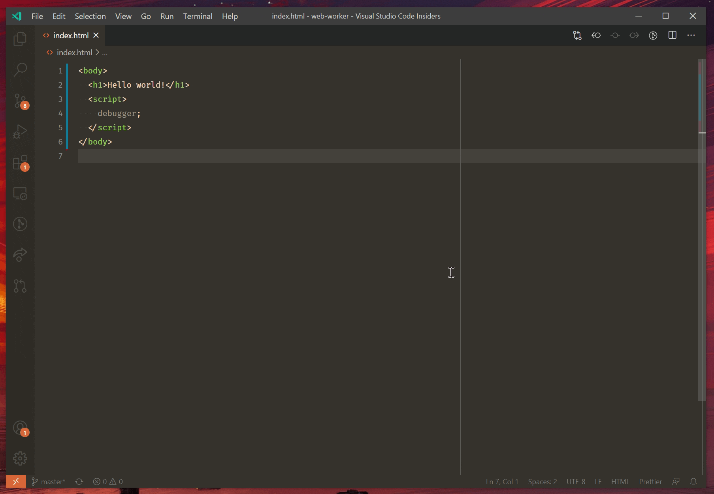

Browser debugging in VS Code
Visual Studio Code includes a built-in debugger for Edge and Chrome. There are a couple ways to get started with it.
- Use the Open Link command to debug a URL.
- Clicking a link in the JavaScript debug terminal.
- Use a launch config to launch a browser with your app.
We also have more detailed walkthroughs to get started with React, Angular, Vue, and Ember, as well as other debugging recipes.
Open Link command
The simplest way to debug a webpage is through the Debug: Open Link command found in the Command Palette (kb(workbench.action.showCommands)). When you run this command, you'll be prompted for a URL to open, and the debugger will be attached.

If your default browser is Edge, VS Code will use it to open the page. Otherwise, it will try to find an installation of Chrome on your system instead.
Launch configuration
Launch configs are the traditional way to set up debugging in VS Code, and provide you the most flexibility for running complex applications.
In this section, we'll go into more detail about configurations and features for more advanced debugging scenarios. Instructions for Node.js debugging with source maps and stepping over external code also apply to browser-based debugging.
Note: If you are just getting started with VS Code, you can learn about general debugging features and creating
launch.jsonconfiguration files in the Debugging topic.
Launching browsers
In most cases, you'll want to start a new instance of the browser to debug your webpage or file. To do this, you can create a file named .vscode/launch.json that looks like this:
{
"version": "0.2.0",
"configurations": [
{
"type": "pwa-msedge",
"request": "launch",
"name": "Launch my cool app",
"url": "http://localhost:8000"
}
]
}
When you hit kb(workbench.action.debug.start) or the Start button in the Debug view, http://localhost:8000 will be opened in debug mode. If you'd like to use Chrome instead of Edge, replace pwa-msedge with pwa-chrome.
You can also debug a single file without running a server, for example:
{
"version": "0.2.0",
"configurations": [
{
"type": "pwa-msedge",
"request": "launch",
"name": "Launch hello.html",
"file": "${workspaceFolder}/hello.html"
}
]
}
Attaching to browsers
To attach to a running browser, it needs to be launched in a special debug mode. You can do this using the following command, replacing edge.exe with the path to your Edge or Chrome binary:
edge.exe --remote-debugging-port=9222 --user-data-dir=remote-debug-profile
Setting the --remote-debugging-port tells the browser to listen on that port for a debug connection. Setting a separate --user-data-dir forces a new instance of the browser to be opened; if this flag isn't given, then the command will open a new window of any running browser and not enter debug mode.
Next, add a new section to the vscode/launch.json file as below:
{
"version": "0.2.0",
"configurations": [
{
"type": "pwa-msedge",
"request": "attach",
"name": "Attach to browser",
"port": 9222
}
]
}
Now, you can press kb(workbench.action.debug.start) or the Start button in the Debug view to attach to the running browser. You can even add a host property to debug a browser running on a different machine.
Launch configuration attributes
Debugging configurations are stored in a launch.json file located in your workspace's .vscode folder. An introduction into the creation and use of debugging configuration files is in the general Debugging article. You can either "launch" a browser with your application, or "attach" to an existing browser that you started in debug mode.
Below is a reference of common launch.json attributes specific to browser debugging. You can view the complete set of options in the vscode-js-debug options documentation.
webRoot- The root directory for your source code. Most often, and by default, thewebRootis your workspace folder. This option is used for sourcemap resolution.outFiles- An array of glob patterns for locating generated JavaScript files. See the section on Source maps.smartStep- Try to automatically step over source code that doesn't map to source files. See the section on Smart stepping.skipFiles- Automatically skip files covered by these glob patterns. See the section on Skipping uninteresting code.trace- Enable diagnostic output.
These attributes are only available for launch configurations of request type launch:
url- The URL to automatically open when the browser is launched.runtimeExecutable- Either an absolute path to the browser executable to use, or the version of the browser to use. Valid versions includestable(default),canary,beta, anddev.runtimeArgs- Optional arguments passed when launching the browser.
These attributes are only available for launch configurations of request type attach:
url- If given, VS Code will attach to a tab with this URL. If not provided, it will attach to all browser tabs.port- Debug port to use. See the section on Attaching to Node.js.address- TCP/IP address of the debug port. See the section on Attaching to Browsers.
Next steps
- Debugging - Read about general VS Code debugging features.
- Debugging Recipes - Set up debugging for your favorite platform.